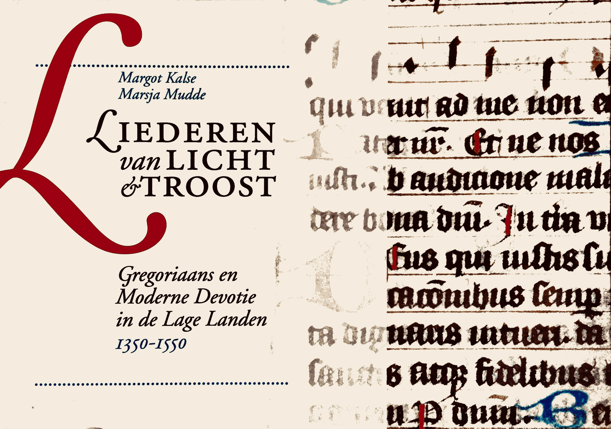
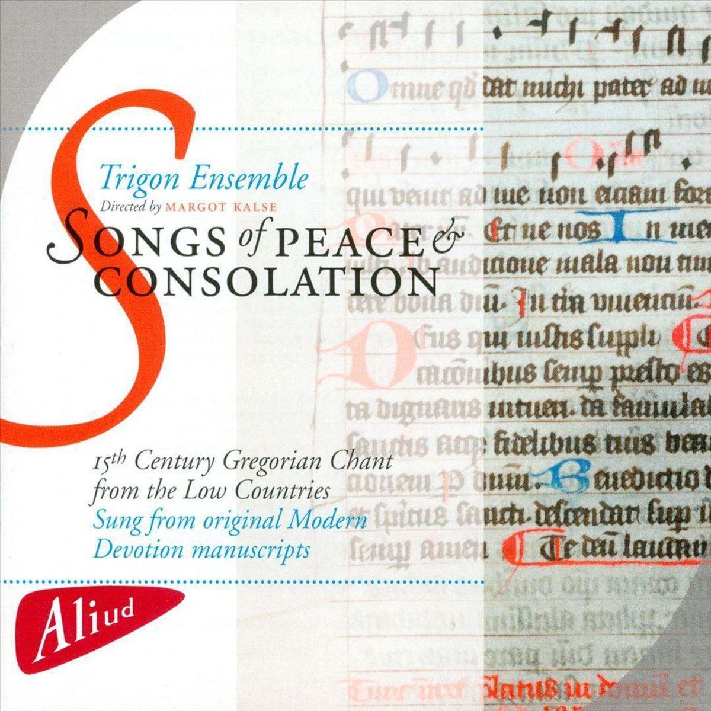

Boek en cd Gregoriaans en liederen uit de Moderne Devotie door ensemble Trigon
De stichting Key2Singing heeft als afsluiting van het project Gregoriaans en Moderne Devotie- Schatgraven in ons cultureel erfgoed een cd en boek uitgegeven. Afgelopen jaar heeft ensemble Trigon in opdracht van de stichting Key2Singing onderzoek gedaan naar de muziek van het Gregoriaans en de Moderne Devotie in de Lage Landen in de periode 1350-1550. In het kader van dit project zijn, naast een studie naar de historie van deze muziek en de originele muzieknotatie, diverse workshops en concerten georganiseerd. Dit heeft geresulteerd in de in 2012/2013 verschenen cd met bijbehorend boek.
Inhoud boek
Het boek Liederen van Licht en Troost, Gregoriaans en Moderne Devotie in de Lage Landen bevat een selectie van gregoriaanse liederen en liederen uit de Moderne Devotie, inclusief transcriptie en vertaling van de teksten. Bovendien bevat het een inleiding in deze religieuze stroming en een handleiding hoe de unieke handschriften met muziek gelezen moeten worden. Het is voor het eerst dat kleurenafbeeldingen van muziekhandschriften in een uitgave worden gecombineerd met een voor leken begrijpelijke handleiding voor het lezen ervan.
Inhoud CD
Op de cd Songs of Peace and Consolation, uitgebracht bij Aliud Records, zijn opnames te horen van de gezangen, uitgevoerd door ensemble Trigon. De teksten van de Nederlandse en Latijnse liederen staan in het cd-boekje afgedrukt, met een Engelse vertaling. Bijna alle liederen van de cd kunnen, in de originele notatie, worden meegelezen in het bovenbeschreven boek. Zo vormen boek en cd ook een educatief geheel.
Multidisciplinaire benadering
Cd en boek brengen een relatief onbekend stukje Nederlandse geschiedenis aan het licht, middels een originele multidisciplinaire benadering. De historie van de Moderne Devotie, unieke kenmerken van de muziek(notatie) en de politieke, sociale en culturele invloeden van deze tijd komen uitgebreid aan bod. De uitgaven beogen van educatieve en esthetische waarde te zijn voor zowel liefhebbers als professionals.
Gegevens boek en CD
ISBN 978-90-9027297-9 / Aliud Records ACD BE 064-2
Bestellen
Zowel boek als CD zijn nog te bestellen bij Marsja Mudde Muziek door een telefoontje of bericht naar 06-18277792.
Meer informatie over de stichting Key2Singing en het project Gregoriaans en Moderne Devotie in de Lage Landen, kunt u vinden op http://www.key2singing.nl/boekcd.html.